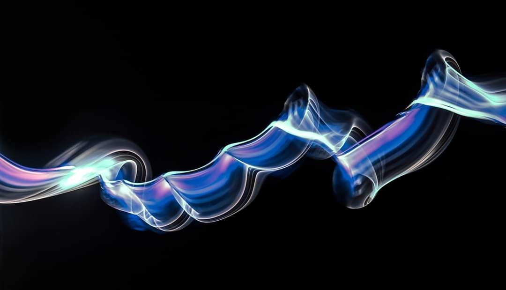

SKETCHLIGHT
 Ray Vanger is a Lightpainting photography artist addicted to waving lights in the dark. Lightpainting is an art form, a combination of painting and photography, darkness is our canvas and light is the brush. All of the artworks are pictures Lightpainting created in realtime captured to the camera in one single photographic frame. Without Photoshop intervention (we have raw image for proof) The artworks are done in a completely dark studio or at night in places where there is no artificial "light pollution".Lightpainting is an art form, a technique consisting of creating Images by capturing the movement of light. In all the creation we do the lightning by hand, We see the movement constantly changing. We are exploring all kinds of techniques. Some of our work highlights the abstract nature of light, we are inspired by the beauty of light in all its various forms. It is a technique that creates the impossible, records the paths of light into the picture, reveals something hidden in the real world.
Lightpainting is a clear testimony to the beauty of the phenomenon of light. The creative potential of light brings new sensations, new colors, new meaning to our lives. Despite the frequent use of concepts such as contemporary art, and the shadow of the technological and digital changes in photography, the emphasis in our artworks is precisely on analog, manual, low-tech aesthetics. Through the use of technique from the beginning of photography to create contemporary art.
I think that this way you can reinvent the medium of photography. My intention is to raise awareness of the existence of this type of artwork ("lightpainting") and its inherent charm.